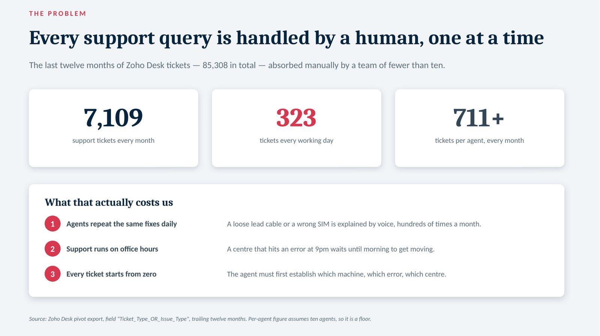
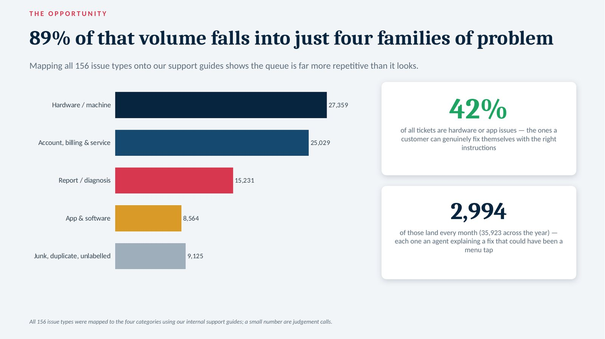
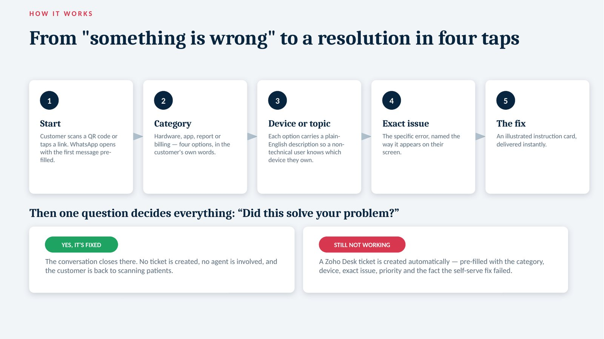
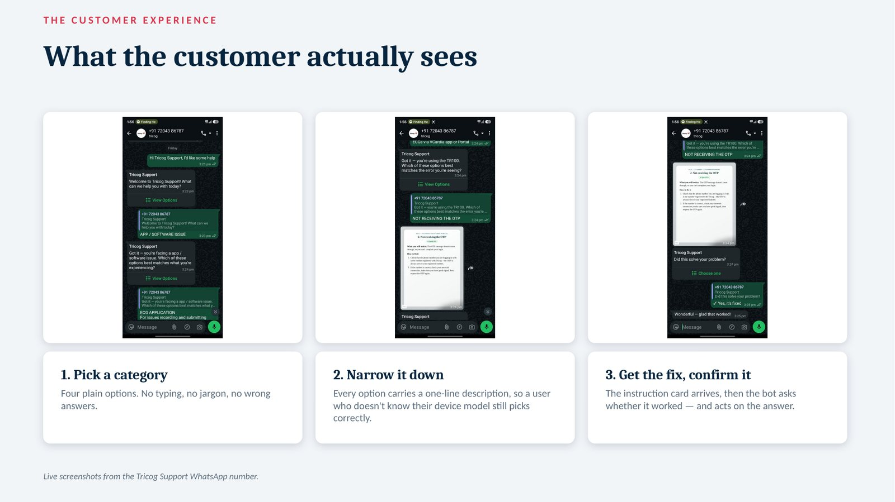
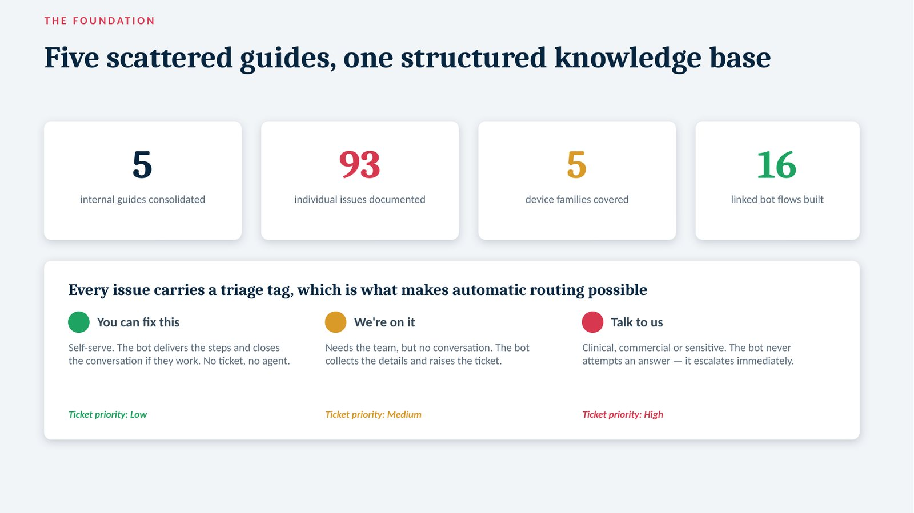
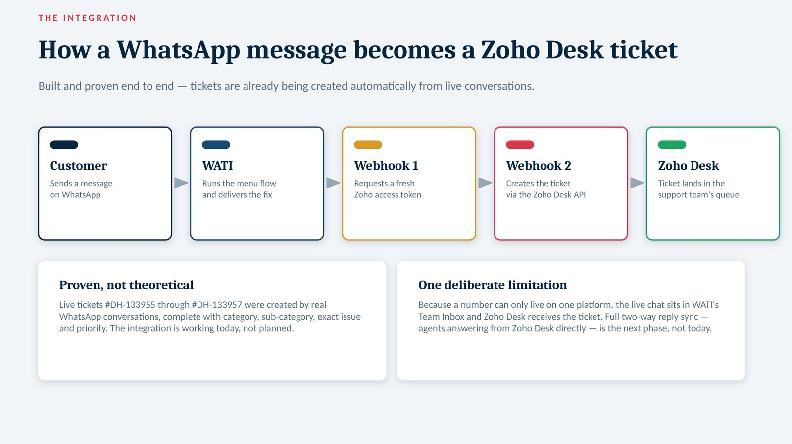
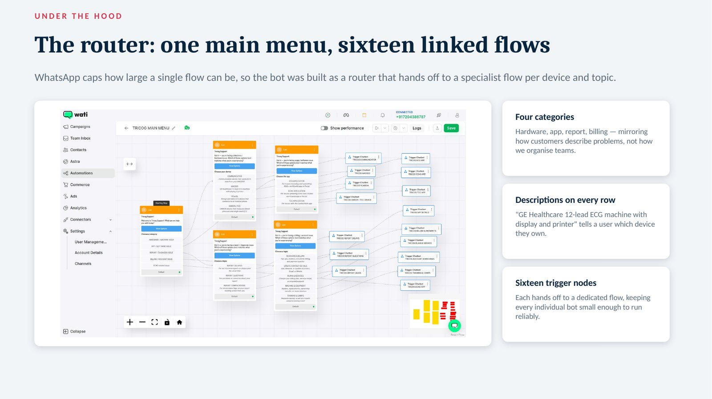
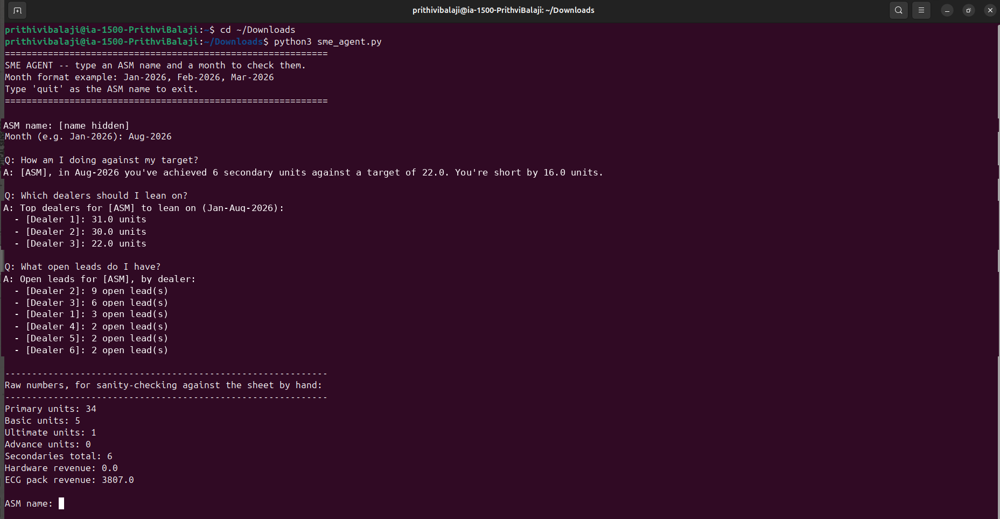

Tricog Health
2026 – Present · BengaluruBusiness Analyst Intern — Automation & Business Intelligence
Tricog reads ECGs for diagnostic centres and hospitals across India. Two parts of that business ran on people repeating themselves: the sales team, and the support desk. I was given both.
GIGA CHAT — a support desk that lives in WhatsApp
Built, tested with real users, and presented to company leadership. Waiting on a licence and a go-live decision, not on development.
Message the assistant on WhatsApp wa.me/917204386787Every support query was handled by a person, one at a time — 85,308 tickets in a year, absorbed by a team of fewer than ten. A loose lead cable was explained by voice hundreds of times a month, and a centre that hit an error at 9pm waited until morning.
I read the whole year of tickets and found that 89% fell into only four kinds of problem. That made a guided assistant viable: four taps from "something is wrong" to a specific fix, on the app our customers already have open.
Fixes that used to need an agent now arrive instantly, at any hour. When the fix doesn't work, the customer taps once and a ticket appears for the team — already labelled with the category, device, exact problem and priority.
- Mapped all 156 ticket types onto four problem families, and sized each one.
- Consolidated five scattered internal guides into one knowledge base of 93 documented issues.
- Rewrote every issue as a short instruction card for a stressed technician on a small screen.
- Tagged each issue fix-it-yourself, team-handled, or straight to a person — the tag is what decides whether the assistant answers or hands over.
- Compared six platforms before anything was built, and wrote up why one won.
- Built the sixteen linked conversation flows in WATI, the automatic handover into Zoho Desk, and the risk list that went with it.
Evidence — from the leadership review







- PDFThe full project reviewThe deck I presented to leadership — problem, build, risks and the decisions needed to launch
- PDFTicket classification mapEvery ticket type sorted into the four families the assistant routes on
- PDFKnowledge base sampleOne of the five guides, rewritten for customers instead of engineers, with triage tags
Customer names, phone numbers and the live bot number have been removed from these materials.
A sales assistant for area sales managers
A working prototype that answers the question a manager actually has at month end.
An area sales manager ending the month at 6 units against a target of 22 can see the gap easily. Knowing which dealers and which unworked leads will close it meant waiting on someone else to pull a report.
I scoped the questions with the sales organisation, then built an assistant that reads the live sales tracker and answers them in plain language — achievement against target, the dealers best placed to help, and open leads dealer by dealer.
Managers can interrogate their own number instead of asking for a report. Every answer can be checked by hand against the sheet, which is what made the sales team trust it.
- How am I doing against my target this month?
- Which dealers should I lean on to close the gap?
- What open leads do I have, dealer by dealer?
- Show me the raw numbers so I can check them against the sheet.
The unglamorous half of this was the data: three trackers recorded the same months, dealers and managers in three different ways. Reconciling them is why the answers tie back to the sheet.
Evidence — the prototype running
